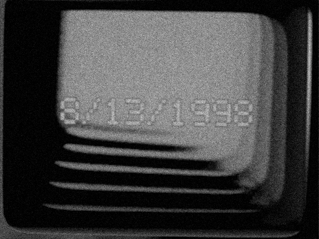
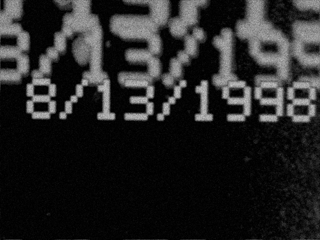

When I was a kid I had one of those little five-inch black-and-white portable TVs, and a Sony Video8 Handycam.

The TV only had an antenna input, so I used an RF adapter to hook the camera up to it for playback. At some point I realized I could leave the Handycam in camera mode, point it at the screen, and film its own live output.
That was much more interesting.
Zooming or moving the camera around would send the picture into dizzying feedback, sometimes forming tunnels and other shapes that changed quickly with small movements. Those sonys also had a built-in title generator, and putting text into the loop produced its own set of trippy artifacts. I used the setup for homemade title sequences for videos no one watched.
Recently it popped into my mind as a fun thing to recreate in Blender. I've been trying to get more proficient doing silly shit with blender, what a good simple exercise this would make!
I started by modeling the CRT tube itself rather than the television around it: the glass envelope, phosphor face, electron gun, graphite coating, high-voltage hardware and other parts that are normally hidden inside the case.
From there the project ballooned in scope into a working screen model, and then into a simulation of the original camera-to-TV feedback setup.
The virtual Handycam films the CRT, its output is fed back to the screen, and the image develops recursively over time. The simulation includes interlaced raster scanning, phosphor persistence, camera response, signal degradation and real handheld camera behavior such that moving or zooming it changes the feedback in the way I remember.
It can also take stills or video as input, along with a recreation of the Handycam's chunky built-in title graphics.

The final test ended up as a short video called TR416.
The date isn't significant. It just seemed about right.